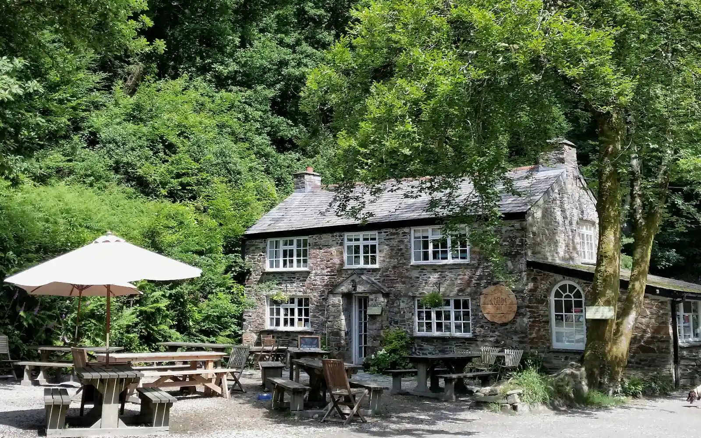
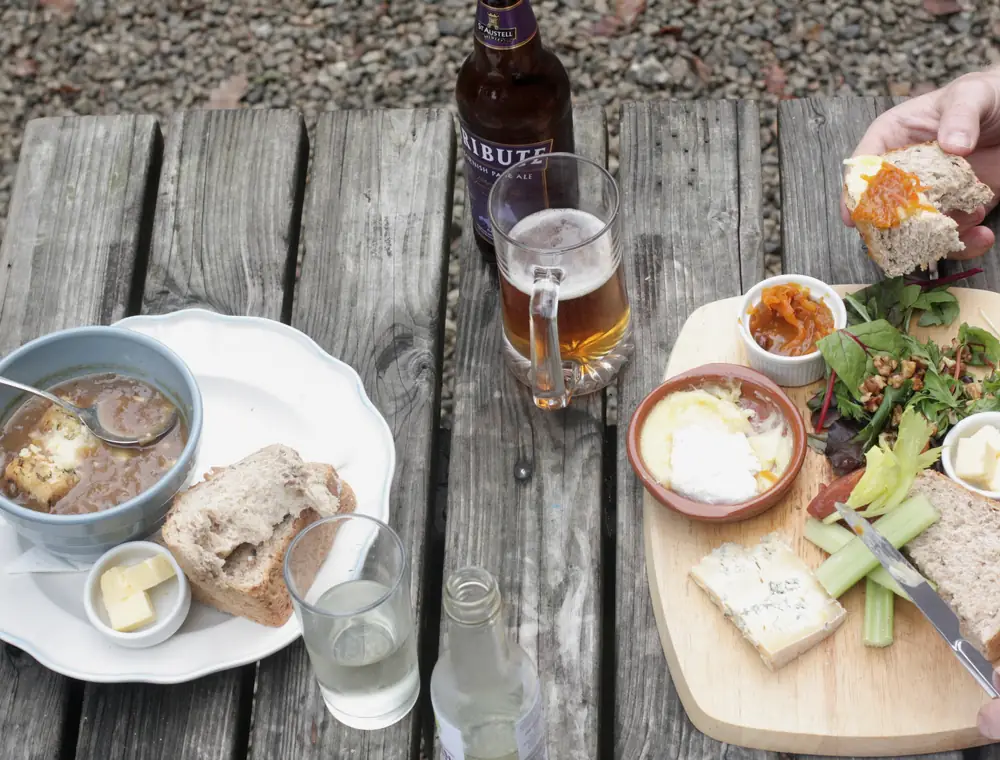
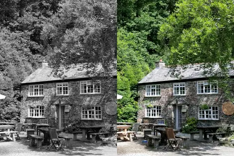
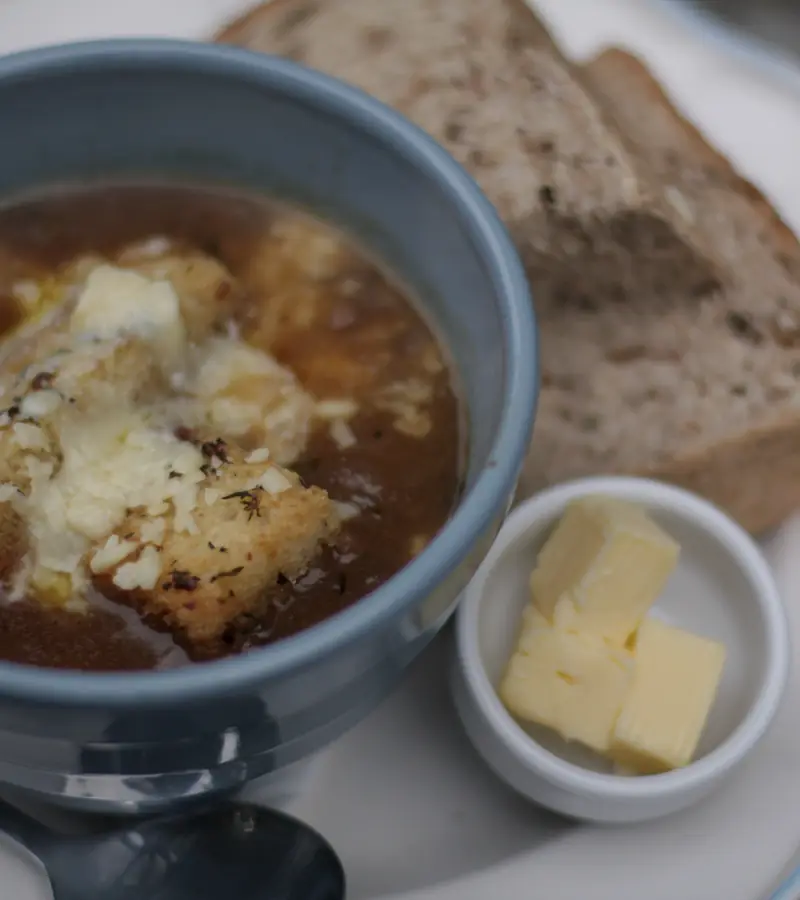

Walk in
They don’t take bookings. There is seating inside, outside and under the marquee.

Cardinham Woods · Bodmin, Cornwall
Homemade food, warm scones and locally roasted coffee — right in the middle of the woods.
A family-run hidden gem
Every order is freshly prepared, cakes and scones are baked each morning, and outside food comes ready to carry to your favourite patch of forest.

madeYour weather-proof pause
Long outdoor tables for bright days, a marquee when Cornwall changes its mind, and a roaring log fire when winter settles in.

take five
before the next trail

fresh todayGood to know before you go
They don’t take bookings. There is seating inside, outside and under the marquee.
Outside orders use compostable takeaway containers and a collection buzzer.
A two-bedroom holiday flat sits above the cafe for walkers, cyclists and cake lovers.
Into the woods
Bodmin
Cardinham Woods